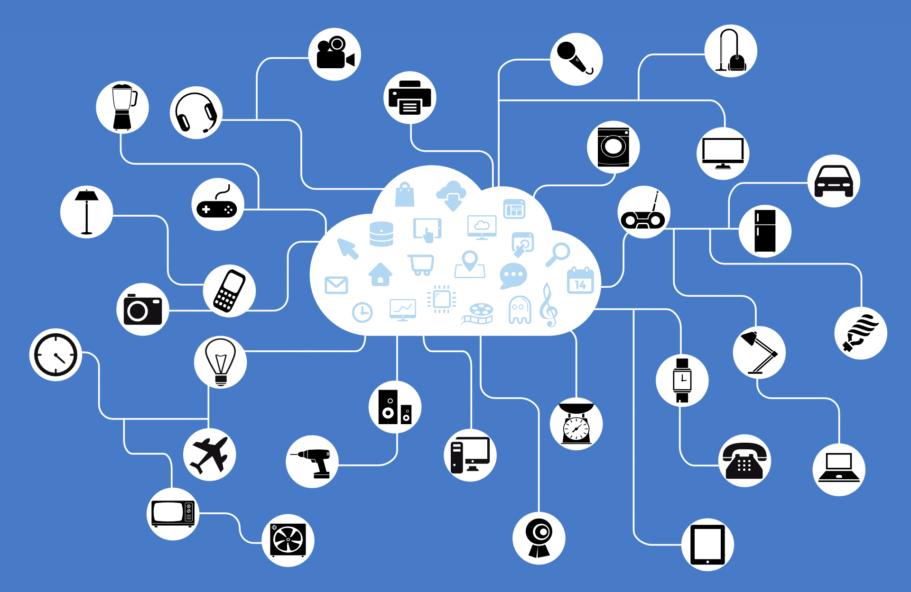

Pros and cons of IoT
Pros and cons of IoT
The Internet of Things (IoT) refers to the internetworking of computing devices, machines, objects and more, that are embedded with unique identifiers and have the ability to transfer data over a network. The vast amount of intelligence and services brought to the table, have the potential to significantly shape our everyday lives – how we manage our cities, healthcare and even how we grow our food. To date, there are over 20 billion things connected to the internet, with that number expected to jump to 50 billion by 2020. Surprisingly, many people use IoT every day without even knowing it. Connected thermostats, ATM machines, wearables and even traffic lights all make up the IoT. Below we discuss the pros and cons of the IoT and how it could change your everyday life, very soon.

PROs
| Automation |
Automation leads to uniformity in tasks, quality of service and control of day-to-day tasks without human intervention. Machine-to-machine communication also helps maintain transparency throughout the process. |
| Efficiency |
Machine-to-machine interaction provides for better efficiency, enabling people to focus on other jobs. |
| Cost Savings |
In addition to the optimal utilization of energy and resources, the IoT helps alleviate the problems associated with bottlenecks, breakdowns and system damages. |
| Communication |
IoT allows physical devices to stay connected and better communicate, which creates greater quality control. |
| Instant Data Access |
More available information helps simplify the decision making process, making life easier to manage. |
CONs
| Privacy and Security |
As many of our everyday appliances, machines and services become connected to the internet, much more information is readily available. It makes it harder to keep confidential information out of the hands of hackers and other unauthorized users. |
| Compatibility |
Currently, there is not international standard of compatibility for the IoT which can make it hard for devices from different manufacturers to communicate with each other. |
| Complexity |
Because the IoT is such a vast, diverse network, a single failure in either the software or hardware can have disastrous consequences. |
| Less Jobs |
As IoT brings in more consistent automation, we could see a decline in the need for unskilled employees in the workplace. |
| Technologically Dependent Life |
As our lives become more and more dependent on technology, basic human interaction skills will be reduced across society. |